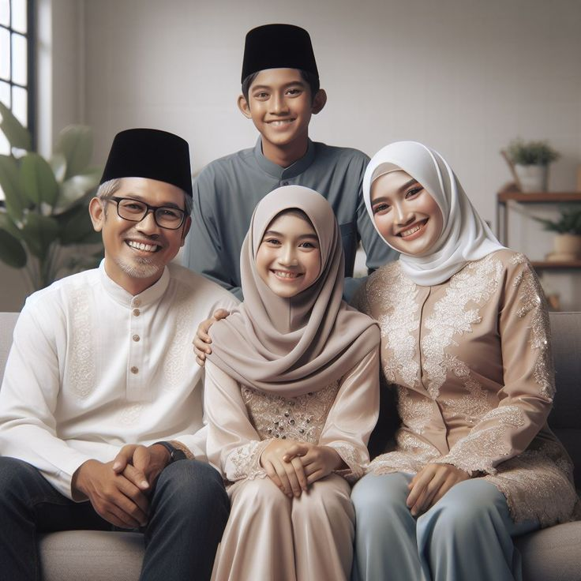

1
Bahagiakan Orang tua
Membuat orang tua bahagia adalah harapan terpenting bagi saya, terutama untuk ibu yang sedang berjuang.
Nama saya Rafly Heriansyah, saya lahir di Cimahi pada tanggal 12 Januari 2004. Saya sekarang merupakan mahasiswa aktif di Politeknik Negeri Bandung, jurusan Teknik Elktro, prodi D-IV Teknik Otomasi Industri
Saya memiliki kemampuan berkomunikasi dengan baik, mampu bekerja sendiri maupun dalam kelompok memiliki rasa tanggung jawab yang besar, tertarik dengan suatu hal baru yang dapat menambah pengetahuan
Saya memiliki pengalaman dalam video editing, mulai dari pemotongan dasar dan transisi hingga color grading dan desain suara yang lebih kompleks.
Saya telah mengerjakan beberapa proyek 3D modelling, termasuk pembuatan karakter, lingkungan virtual, dan aset game.
Saya terbiasa dengan teknik komposisi, pemilihan warna, dan tipografi untuk menciptakan desain yang menarik dan efektif.
Saya bisa membuat dan memodifikasi program PLC untuk meningkatkan efisiensi proses industri.
Saya paham cara menghubungkan dan mengamankan kabel dengan aman, serta memastikan sistem bekerja dengan baik.
Saya sering menangani masalah kelistrikan sehari-hari, seperti perbaikan sakelar dan perangkat elektronik.
"Kontrol amarahmu, karena jika kamu marah kepada orang lain, mereka yang mengendalikanmu."
Miyamoto Musashi"Bukan hal atau peristiwa tertentu yang meresahkan kita, tetapi persepsi akan hal dan peristiwa tersebut."
Epictetus"Semua yang kita dengar adalah opini bukan fakta. Semua yang kita lihat adalah perspektif, bukan kebenaran."
Marcus Aurelius
beberapa karya yang telah saya buat.
Beberapa foto dan video tentang diri saya
Membuat orang tua bahagia adalah harapan terpenting bagi saya, terutama untuk ibu yang sedang berjuang.
Salah satu impian saya adalah dapat bekerja di perusahaan besar baik itu di dalam negeri maupun diluara negeri
Saya ingin memanfaatkan setiap kesempatan untuk mengasah keterampilan dan memperluas pengetahuan saya.